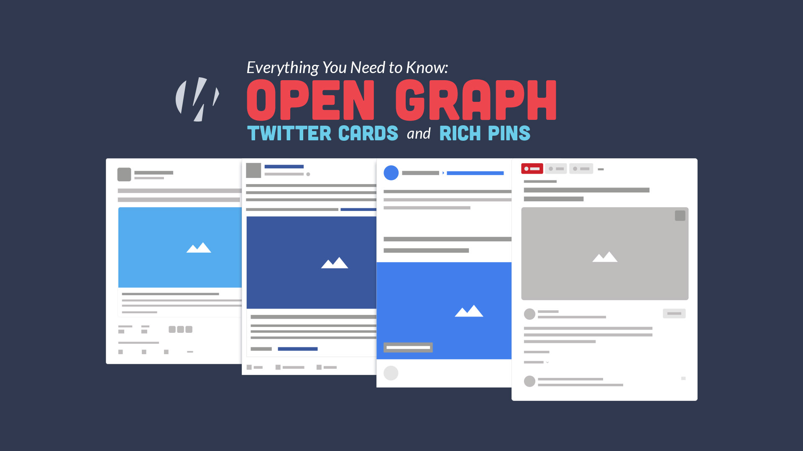
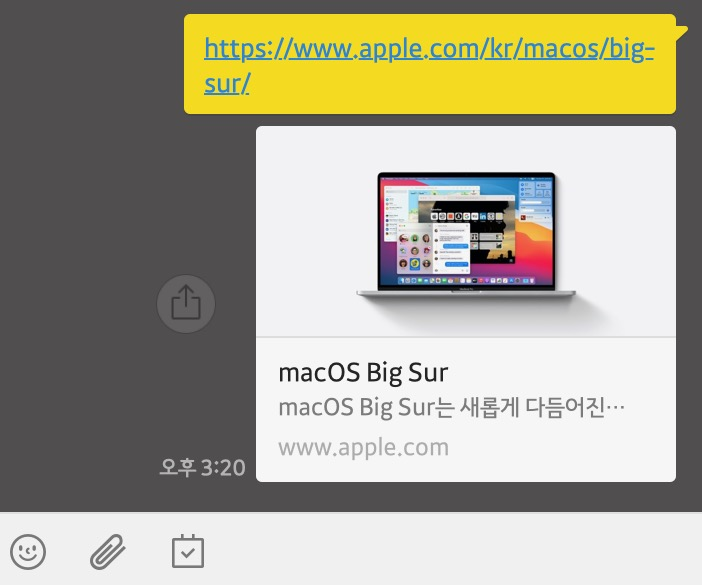

정적 홈페이지는 PHP와 같은 서버사이드 언어로 작성되지 않고 HTML로 작성된 홈페이지를 말합니다.
HTML홈페이지의 특징은 데이터베이스가 없는 형태이기 때문에 게시판이나 회원가입 시스템을 만들 수 없습니다.
그러나 고객정보 유출의 문제를 품고있는 회원가입 시스템과 게시판 대신 대신 최근 클라우드 웹환경의 발달로
고객이 간편하게 회사의 소식을 받을 수 있는 구독(뉴스레터)과 고객 1:1 컨택트 폼기능을 적용할 수 있습니다.
무엇보다도 무료 statice-web 호스팅을 제공하는 업체로 인해 서버를 무료로 사용할 수 있습니다.(일부 서비스 제외/대용량 제외)
또한 유료로 구매해야 하는 https를 기본 제공하고 있기 때문에 https 구매 비용이 별도로 필요하지 않습니다.
(카페24 https 기준으로 1년에 66,000원/스탠다드 서비스)
HTML홈페이지는 회사의 정보 및 서비스 전달과 대내/외 홍보를 목적으로 하는 대부분의 홈페이지에 적합합니다.
또한 인스타그램 등의 소셜 계정의 게시물을 홈페이지에 연동할 수 있어 꾸준한 포스팅이 필요한 경우에도 적합한 서비스로서 이용될 수 있습니다
또한 사용 방법이 비교적 간단한 정적 홈페이지의 특성으로 인해 별도의 웹디자이너가 없이
간단한 서버 사용 방법 교육만으로 고객이 직접 수정하실 수 있습니다. 클라우드 웹환경과 소셜 서비스의 발달로 인해
정적 홈페이지(Static-Web)의 개발은 세계적인 트렌드입니다. 당사의 홈페이지 역시 HTML 홈페이지로 제작되었습니다.
파비콘(Favicon)은 favorite icon의 합성어로, 홈페이지의 타이틀 옆에 위치한 필수적인 아이콘입니다. 고객은 파비콘을 통해 회사의 홈페이지를 더욱 직관적이고 편리하게 인지할 수 있습니다.
 오픈그래프(Open graph)란 카카오톡이나 페이스북 등 SNS를 통해 공유될 때, 홈페이지에 관한 요약을 나타내는 부분입니다. 오픈 그래프는 사진에서 보듯이, 오픈 그래프 이미지와 오픈그래프 타이틀, 오픈그래프 설명으로 구성됩니다. 오픈그래프 또한 현대 홈페이지 제작에 필수적인 요소 중 하나입니다.